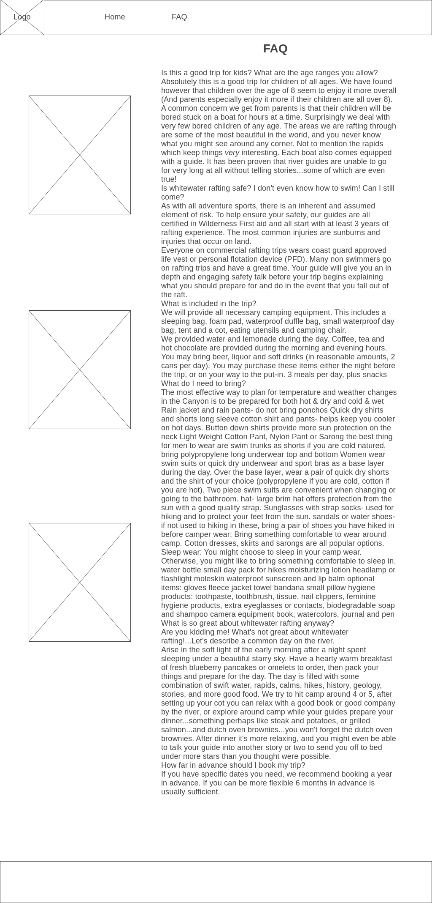

Overview
Purpose
Find a rafting guide that works best for your party. Our professional instructors commit to make trip safe, and your day awesome. Chat with us to help plan your trip!
Audience
College students, want group fun, college age and need low prices because of school
they can't find good prices for college fun with friends.
needs not yet being met.
both desktop and mobile equally used
Branding
Website Logo
Style Guide
Color Palette
Palette URL:
https://coolors.co/565554-2e86ab-f6f5ae-f26419-db222a| Primary | Secondary | Accent 1 | Accent 2 | Accent 3 |
|---|---|---|---|---|
| [#565554] | [#2E86AB] | [#F6F5AE] | [#F26419] | [#DB222A] |
FAQ
- Is this a good trip for kids? What are the age ranges you allow?
- Absolutely this is a good trip for children of all ages. We have found however that children over the age of 8 seem to enjoy it more overall (And parents especially enjoy it more if their children are all over 8). A common concern we get from parents is that their children will be bored stuck on a boat for hours at a time. Surprisingly we deal with very few bored children of any age. The areas we are rafting through are some of the most beautiful in the world, and you never know what you might see around any corner. Not to mention the rapids which keep things very interesting. Each boat also comes equipped with a guide. It has been proven that river guides are unable to go for very long at all without telling stories...some of which are even true!
- Is whitewater rafting safe? I don't even know how to swim! Can I still come?
- As with all adventure sports, there is an inherent and assumed element of risk. To help ensure your safety, our guides are all certified in Wilderness First aid and all start with at least 3 years of rafting experience. The most common injuries are sunburns and injuries that occur on land.
- Everyone on commercial rafting trips wears coast guard approved life vest or personal flotation device (PFD). Many non swimmers go on rafting trips and have a great time. Your guide will give you an in depth and engaging safety talk before your trip begins explaining what you should prepare for and do in the event that you fall out of the raft.
- What is included in the trip?
- We will provide all necessary camping equipment. This includes a sleeping bag, foam pad, waterproof duffle bag, small waterproof day bag, tent and a cot, eating utensils and camping chair.
- We provided water and lemonade during the day. Coffee, tea and hot chocolate are provided during the morning and evening hours. You may bring beer, liquor and soft drinks (in reasonable amounts, 2 cans per day). You may purchase these items either the night before the trip, or on your way to the put-in. 3 meals per day, plus snacks
- What do I need to bring?
- The most effective way to plan for temperature and weather changes in the Canyon is to be prepared for both hot & dry and cold & wet Rain jacket and rain pants- do not bring ponchos Quick dry shirts and shorts long sleeve cotton shirt and pants- helps keep you cooler on hot days. Button down shirts provide more sun protection on the neck Light Weight Cotton Pant, Nylon Pant or Sarong the best thing for men to wear are swim trunks as shorts if you are cold natured, bring polypropylene long underwear top and bottom Women wear swim suits or quick dry underwear and sport bras as a base layer during the day. Over the base layer, wear a pair of quick dry shorts and the shirt of your choice (polypropylene if you are cold, cotton if you are hot). Two piece swim suits are convenient when changing or going to the bathroom. hat- large brim hat offers protection from the sun with a good quality strap. Sunglasses with strap socks- used for hiking and to protect your feet from the sun. sandals or water shoes- if not used to hiking in these, bring a pair of shoes you have hiked in before camper wear: Bring something comfortable to wear around camp. Cotton dresses, skirts and sarongs are all popular options. Sleep wear: You might choose to sleep in your camp wear. Otherwise, you might like to bring something comfortable to sleep in. water bottle small day pack for hikes moisturizing lotion headlamp or flashlight moleskin waterproof sunscreen and lip balm optional items: gloves fleece jacket towel bandana small pillow hygiene products: toothpaste, toothbrush, tissue, nail clippers, feminine hygiene products, extra eyeglasses or contacts, biodegradable soap and shampoo camera equipment book, watercolors, journal and pen
- What is so great about whitewater rafting anyway?
- Are you kidding me! What's not great about whitewater rafting!...Let's describe a common day on the river.
- Arise in the soft light of the early morning after a night spent sleeping under a beautiful starry sky. Have a hearty warm breakfast of fresh blueberry pancakes or omelets to order, then pack your things and prepare for the day. The day is filled with some combination of swift water, rapids, calms, hikes, history, geology, stories, and more good food. We try to hit camp around 4 or 5, after setting up your cot you can relax with a good book or good company by the river, or explore around camp while your guides prepare your dinner...something perhaps like steak and potatoes, or grilled salmon...and dutch oven brownies...you won't forget the dutch oven brownies. After dinner it's more relaxing, and you might even be able to talk your guide into another story or two to send you off to bed under more stars than you thought were possible.
- How far in advance should I book my trip?
- If you have specific dates you need, we recommend booking a year in advance. If you can be more flexible 6 months in advance is usually sufficient.
Typography
Heading Font: [Font Name here]
Paragraph Font: [Font Name here]
Normal paragraph example
The best Whitewater Rafting in Colorado, White Water Rafting Company offers rafting on the Colorado and Roaring Fork Rivers in Glenwood Springs. Since 1974, we have been family owned and operated, rafting the Shoshone section of Glenwood Canyon and beyond.
Colored paragraph example
Trips vary from mild and great for families, to trips exclusively for physically fit and experienced rafters. No matter what type of river adventures you are seeking, White Water Rafting Company can make it happen for you.
Navigation
Site Map
Wireframes
Home

FAQ
Images